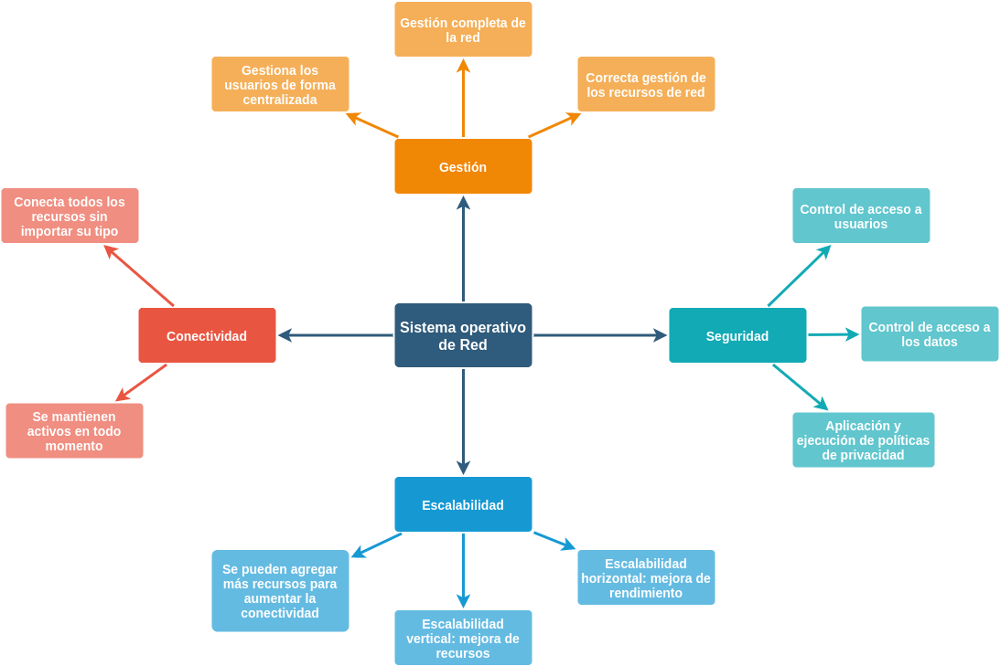

Actividad 3
En esta actividad se realizó un mapa semántico sobre los SIstemas Operativos de Red y sus principales características, así como una pequeña investigación sobre Planificación de la instalación, particiones y sistemas de archivos.
Mapa Semántico
{kind=link}
Planificación de la instalación

En general antes de instalar un sistema operativo en un ambiente empresaria se debe tomar en cuenta tres factores primordiales:
- En qué empresa/organización se implementará el sistema operativo
- Cuál es el presupuesto para la elección del sistema operativo
- Cuál sistema operativo es el más apropiado técnicamente
El primer punto es muy importante ya que se debe conocer cuáles son las políticas que maneja la empresa donde se instalara el sistema operativo, lo que permitirá la elección del más adecuado.
Para el segundo punto de igual forma el presupuesto que se tenga es fundamental, ya que de esto depende para que versión del sistema operativo nos alcance. Por ejemplo, hablando de Microsoft Windows Server 2012 dicho sistema operativo consta con tres tipos de licencias que son; Datacenter (USD 4 809), Standar (USD 882), Essentials (USD 501) cada una con características notoriamente diferentes.
Y para el último punto acerca de cuál es el más apropiado técnicamente se toma en cuenta diversos factores como: fiabilidad, rendimiento, seguridad entre las más importantes. Estos factores se determinan de acuerdo a un análisis de qué requerimientos necesita la empresa.
Particiones

Existen 3 tipos diferentes de particiones:
-
Partición primaria: Son las divisiones crudas o primarias del disco, solo puede haber 4 de éstas o 3 primarias y una extendida. Depende de una tabla de particiones. Un disco físico completamente formateado consiste, en realidad, de una partición primaria que ocupa todo el espacio del disco y posee un sistema de archivos. A este tipo de particiones, prácticamente cualquier sistema operativo puede detectarlas y asignarles una unidad, siempre y cuando el sistema operativo reconozca su formato (sistema de archivos).
-
Partición extendida: También conocida como partición secundaria es otro tipo de partición que actúa como una partición primaria; sirve para contener múltiples unidades lógicas en su interior. Fue ideada para romper la limitación de 4 particiones primarias en un solo disco físico. Solo puede existir una partición de este tipo por disco, y solo sirve para contener particiones lógicas. Por lo tanto, es el único tipo de partición que no soporta un sistema de archivos directamente.
-
Partición lógica: Ocupa una porción de la partición extendida o la totalidad de la misma, la cual se ha formateado con un tipo específico de sistema de archivos (FAT32, NTFS, ext2,...) y se le ha asignado una unidad, así el sistema operativo reconoce las particiones lógicas o su sistema de archivos. Puede haber un máximo de 23 particiones lógicas en una partición extendida.
Sistemas de archivos

La mayoría de los sistemas operativos poseen su propio sistema de archivos. Los sistemas de archivos son representados ya sea textual o gráficamente utilizando gestores de archivos o "shells". En modo gráfico a menudo son utilizadas las metáforas de carpetas (directorios) conteniendo documentos, archivos y otras carpetas. Un sistema de archivos es parte integral de un sistema operativo moderno.
Los sistemas de archivos más comunes utilizan dispositivos de almacenamiento de datos que permiten el acceso a los datos como una cadena de bloques de un mismo tamaño, a veces llamados sectores, usualmente de 512 bytes de longitud. El software del sistema de archivos es responsable de la organización de estos sectores en archivos y directorios y mantiene un registro de qué sectores pertenecen a qué archivos y cuáles no han sido utilizados. En la realidad, un sistema de archivos no requiere necesariamente de un dispositivo de almacenamiento de datos, sino que puede ser utilizado también para acceder a datos generados dinámicamente, como los recibidos a través de una conexión de red.
Generalmente un sistema de archivos tiene directorios que asocian nombres de archivos con archivos, usualmente conectando el nombre de archivo a un índice en una tabla de asignación archivos de algún tipo, como FAT en sistemas de archivos MS-DOS o los inodos de los sistemas Unix. La estructura de directorios puede ser plana o jerárquica (ramificada o "en árbol"). En algunos sistemas de archivos los nombres de archivos son estructurados, con sintaxis especiales para extensiones de archivos y números de versión. En otros, los nombres de archivos son simplemente cadenas de texto y los metadatos de cada archivo son alojados separadamente.
En sistemas de archivos jerárquicos, en lo usual, se declara la ubicación precisa de un archivo con una cadena de texto llamada "ruta". La nomenclatura para rutas varía ligeramente de sistema en sistema, pero mantienen por lo general una misma estructura. Una ruta viene dada por una sucesión de nombres de directorios y subdirectorios, ordenados jerárquicamente de izquierda a derecha y separados por algún caracter especial que suele ser una barra ('/') o barra invertida ('\') y puede terminar en el nombre de un archivo presente en la última rama de directorios especificada.
| Sistemas de Archivos. (n.d.). Retrieved September 26, 2020, from http://www.rinconsolidario.org/linux/cursoLinux/comoInstalarLinux/particiones/fs.html |
| TIPOS DE PARTICIONES - Seguridad Informática. (n.d.). Retrieved September 26, 2020, from https://sites.google.com/site/seguridadinformaticaeeso213/situaciones-de-perdida-de-datos/particiones/tipos-de-particiones |
| Pinzón, /. (2016, June 06). Planificación de la Instalación de un Sistema Operativo. Retrieved September 26, 2020, from https://certificacionsistemasoperativosclavijo.wordpress.com/2016/06/05/planificacion-de-la-instalacion-de-un-sistema-operativo/ |